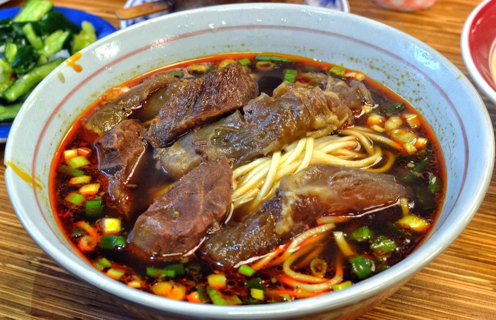

Beef Noodles

Deskripsi Singkat:
Beef Noodles Taiwan adalah hidangan mie dengan sup kaldu daging sapi yang kaya rasa, disajikan bersama potongan daging sapi yang empuk (biasanya potongan sandung lamur atau shank). Supnya bisa memiliki rasa pedas ataupun tidak, tergantung variasi resep.
🎥 Berikut adalah video tutorial cara membuatnya (klik untuk tampil/sembunyi)
🍜 Bahan-Bahan (klik untuk tampil/sembunyi)
UNTUK SUP (click ini)
Untuk melayani
📋 Instruksi Memasak (klik untuk tampil/sembunyi)
1. Untuk sup, dalam panci besar, tutupi betis sapi dengan air dan didihkan. Segera tiriskan air dan sisihkan daging sapi. (Langkah ini membantu menghilangkan kotoran untuk membuat sup yang lebih murni.) Bersihkan panci (atau siapkan panci lain).
2. Masukkan daging sapi rebus, bawang putih, jahe, daun bawang, tomat, bubuk lima rempah, gula merah, adas bintang, cabai, saus kacang cabai, arak beras, kecap asin, kaldu ayam, dan air ke dalam panci.
3. Didihkan campuran, kecilkan api, dan biarkan mendidih perlahan selama sekitar 2 jam, atau sampai daging sapi empuk saat ditusuk dengan garpu. Matikan api dan geser tutup panci agar uap keluar. Diamkan daging dalam cairan rebusan selama satu jam lagi.
4. Pindahkan daging sapi ke talenan. Tuang kaldu melalui saringan berlapis kain tipis ke panci lain. Buang padatan sayuran. Iris daging sapi dan masukkan kembali ke dalam kaldu. (Pada tahap ini, sebaiknya masukkan sup ke dalam lemari es semalaman, atau hingga tiga hari. Rasa akan lebih nikmat saat didiamkan dan lemak akan lebih mudah dikeluarkan.) Buang lemak dari permukaan, dan didihkan kembali sup.
5. Untuk penyajian, didihkan air dalam panci besar. Masukkan sawi putih dan rebus hingga berwarna hijau terang dan empuk, sekitar 2 menit. Angkat sawi putih dengan garpu dan sisihkan. Didihkan kembali air. Masukkan mi dan masak sesuai petunjuk pada kemasan. Saring.
6. Bagi mie dan sawi putih ke dalam mangkuk. Tuang daging sapi dan kaldu panas ke dalam mangkuk. Hiasi dengan daun ketumbar cincang dan sajikan hangat.